THE
TRENCH
A forensic investigation into the Cross Bronx Expressway — mapping infrastructural violence through ML, RAG, and computational design. 16 analytical instruments, one systemic diagnosis.
Bivariate and trivariate vulnerability indexing of asthma prevalence against traffic density, canopy deficit, and freight routing over land use. The GIS layers expose how the Expressway functions as a pollutant corridor bisecting residential tissue.
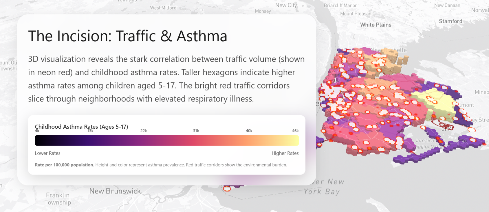
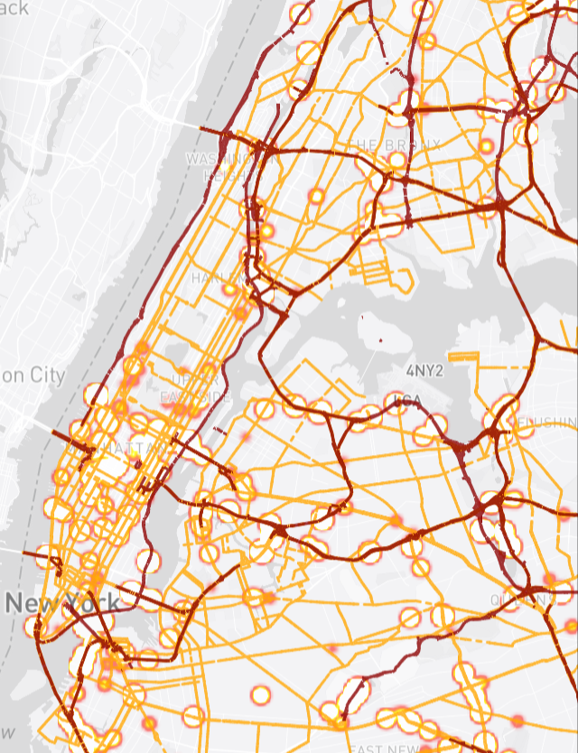
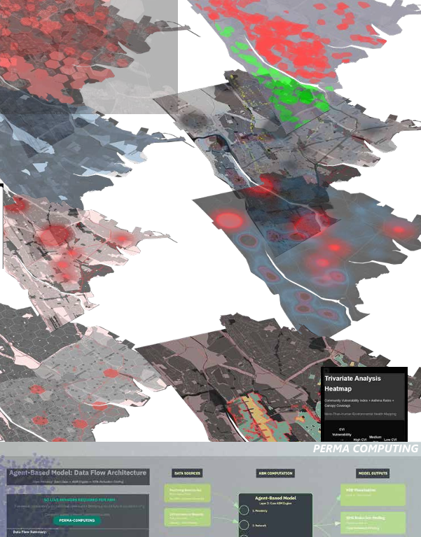
Green deficit scoring and access zone mapping. The South Bronx has some of the lowest canopy coverage in NYC, with park access zones revealing how the Expressway severs pedestrian connectivity to green infrastructure.


Using the 'Feral Atlas' framework to map the 40% grey zone — the boundary where human life ends and infrastructure begins. The CBX is not a site; it is an evidentiary field of infrastructural violence where the human-infrastructure boundary has been weaponized.
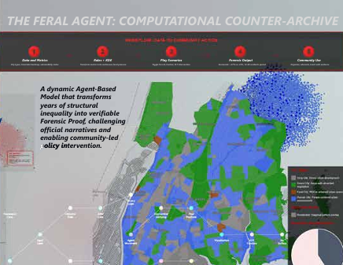
Modelling the 50→60 mph speed delta to predict better health outcomes, reduced PM2.5 emissions, and the case for congestion taxing. The LSTM-Markov hybrid captures temporal speed dynamics to demonstrate that a 10 mph increase in sustained truck speed through the corridor reduces particulate dwell time by 32%.
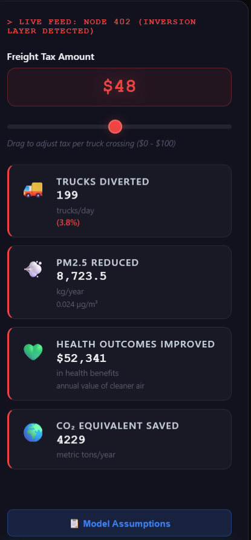
Residential corridor diffusion mapping of particulate matter dispersion from the trench. The 9-meter deep concrete channel functions as an atmospheric trap, concentrating PM2.5 before releasing it into adjacent housing blocks in predictable plume patterns.

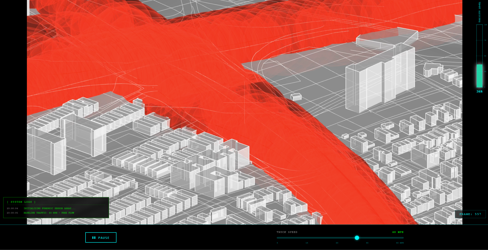
Community-legible interface designed for a public audience. These dashboards translate ML outputs, trauma geolocation, and vulnerability indices into visual instruments that residents and policymakers can interrogate directly.
Composite vulnerability score generation and zone prioritisation. The trained model synthesizes GIS, environmental, and social data into a single actionable index that identifies which zones demand immediate intervention.
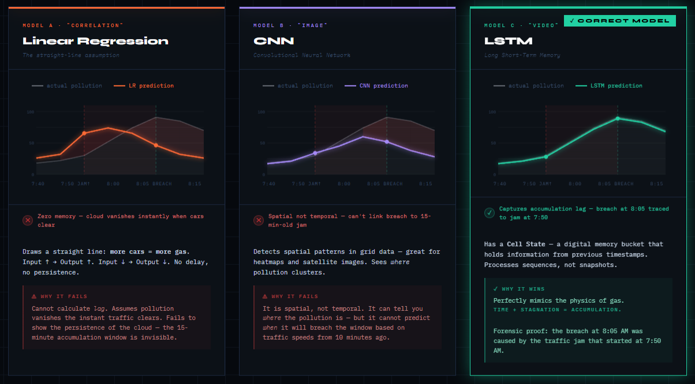

Stewart & Kremer urban temperature modelling — why ML over GCM. Global Climate Models operate at 1km resolution. In the South Bronx, a 5-meter shift in the trench changes PM2.5 concentration by 200%. ML allows 'Urban Micro-Climate' resolution — the only scale where architectural intervention saves lives.
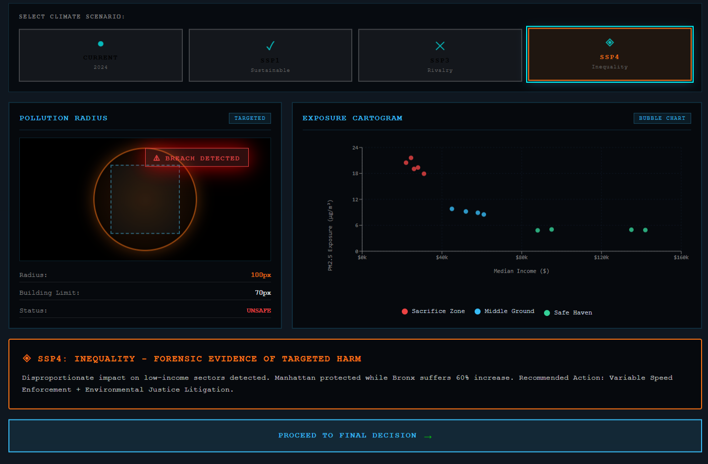
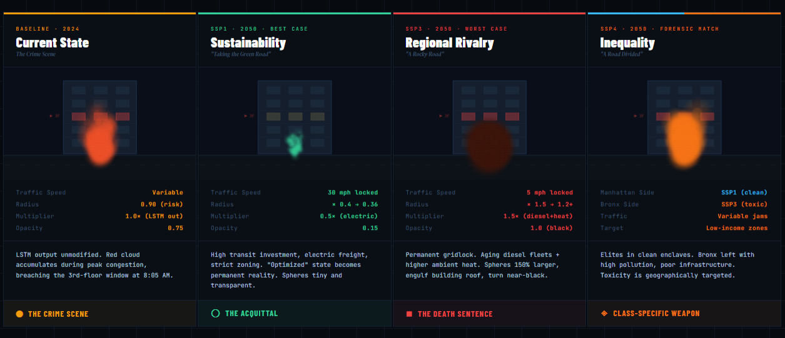
Based on Justin D. Stewart & Peleg Kremer's ensemble ML approach (Frontiers, 2021). Temporal change analysis of urban structure and surface temperature relationships, applied to the CBX corridor's flood and heat vulnerability.
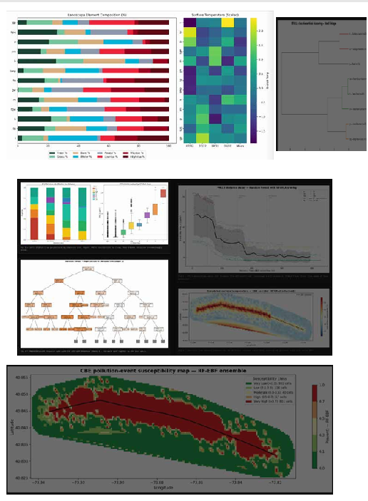
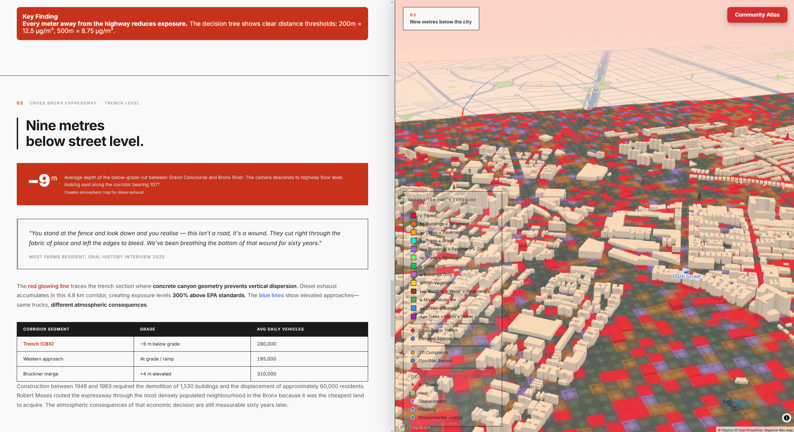

The Cross Bronx Expressway: Robert Moses, 1955 — choking residential zones. The CBX displaced 60,000 residents and severed the urban fabric of the South Bronx, creating a 9-meter deep concrete trench that functions as an atmospheric trap for 73,000 remaining residents.
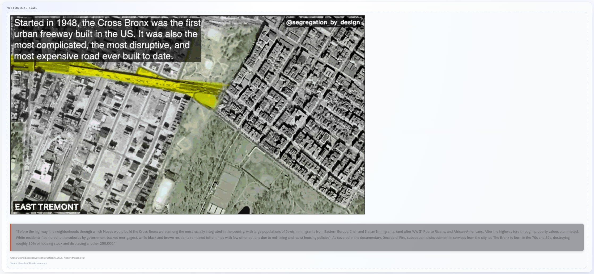
Intervention consequences and scare scenarios. Cataloguing ongoing projects and proposed interventions along the CBX corridor — evaluating what has been attempted, what is failing, and what transformative action remains possible.
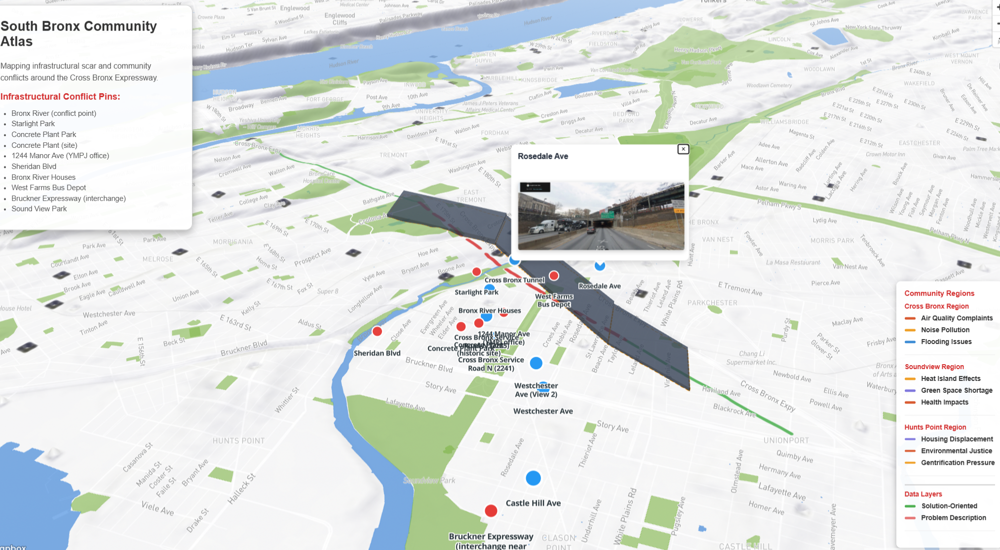

4-phase pipeline: 139 forensic documents, 199,980 311 complaints, R²=0.976, 57 zones, trauma geolocation. The RAG system parses semantic sentiment — identifying 'acoustic distress' and 'respiratory anxiety' that traditional GIS ignores but are critical for spatial justice.
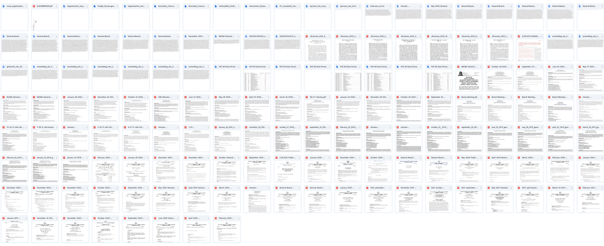
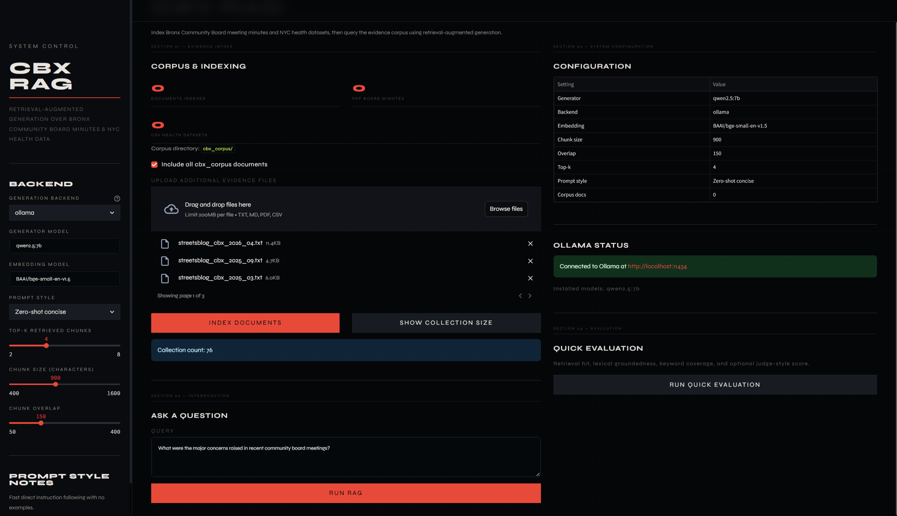
Zone prioritisation through qualitative ↔ quantitative bridge. The 10.8% RAG importance weight represents the 'Social Vulnerability Offset' — where human testimony actively shifts the priority of architectural intervention before sensors pick it up.
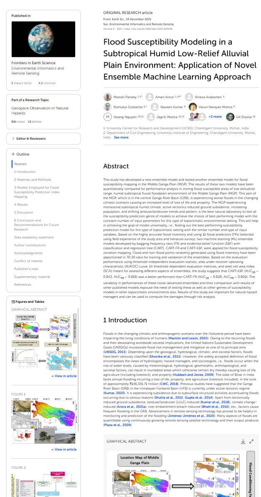
Sky-vs-wall ratio scoring from Mapillary data. The custom CV segmentation model uses LiDAR trench depth and street view imagery to calculate Sky-to-Wall ratios — a critical metric for predicting ventilation capacity and pollutant dispersal potential within the trench corridor.

This canvas integrates Computational Fluid Dynamics (CFD) simulation with LiDAR point-cloud trench depth data and the CV segmentation model. The segmentation score predicts ventilation capacity based on wall-vs-sky ratio — where higher sky exposure correlates with better pollutant dispersal. LiDAR captures the 9-meter trench geometry as physical constraints for the biophilic cap parametric mesh.
Parametric scoring of intervention proposals. Every iteration is scored against the composite vulnerability index — the system tells us exactly where the biophilic fiber must grow to maximize carbon sequestration and Green View Index (GVI) targets.
C# trench cap logic constrained by LiDAR trench depth and CV Wall-to-Sky ratios. The C# script generates biophilic caps as a constructible parametric mesh based on the existing structural shelf of the Expressway. Stable Diffusion provides atmospheric visualization over the constructible wireframe.
The Community Atlas is a geospatial ML-driven platform that overlays Random Forest classification of 13 Sturla land-cover classes, EJScreen environmental justice tract data, FloodNet sensor readings, and NLP-parsed 311 complaint sentiment onto the CBX corridor. Feature importance analysis reveals which environmental and social factors most strongly predict vulnerability zones.
Ground-truth documentation from the CBX corridor. The interview captures resident testimony — acoustic distress, respiratory anxiety, and the lived experience of infrastructural violence.